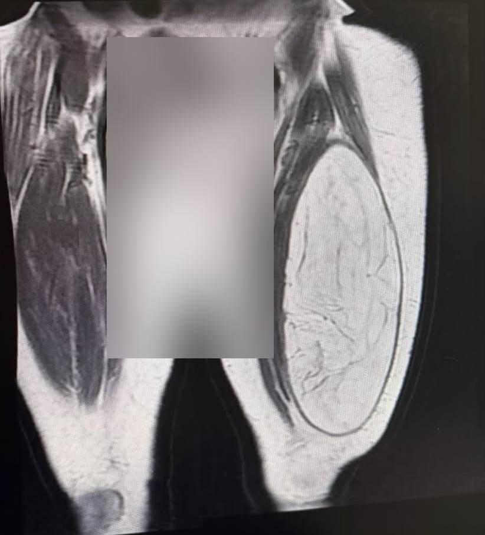

Mulher de meia-idade com aumento progressivo do volume da coxa esquerda.

RM das coxas, corte coronal. Pela convenção radiológica, a coxa esquerda aparece à direita da imagem.
1º EXAME · ULTRASSONOGRAFIA
(ÊNFASE NA FACE ANTERIOR)
Formação ovalada com ecogenicidade de gordura no interior do músculo vasto intermédio com 4,6 x 9,5 x 16,0 cm (espessura x TT x long), bem delimitado e sem sinais de atividade ao power doppler e permite considerar formação de linhagem lipomatosa ou variantes e devido às grandes dimensões recomenda-se estadiar também com RM.
Pele e tecido subcutâneo sem particularidades.
Demais planos musculares avaliados com ecotextura habitual.
Transcrição do laudo original.
2º EXAME · RESSONÂNCIA MAGNÉTICA
TÉCNICA
Exame realizado em equipamento de ressonância magnética de alto campo (1,5 Tesla) com sequências, ponderações e planos específicos para o segmento de interesse.
RELATÓRIO
Volumosa imagem com intensidade de sinal de gordura, localizada no interior dos músculos vasto lateral e vasto intermédio, em praticamente toda a extensão da coxa esquerda, de limites bem definidos, em hipersinal T1, hipossinal T2 com supressão de gordura, medindo até 27,3 x 12,0 x 9,6 cm (CC x LL x AP), com volume aproximado de 1635,0 cm³, sugerindo lesão de linhagem lipomatosa (lipoma intramuscular).
Estruturas ósseas de morfologia preservada, com intensidade de sinal habitual.
Articulação coxofemoral de amplitude preservada.
Discreta tendinopatia na inserção proximal dos isquiotibiais, com esparsos focos de edema adjacente à inserção proximal.
Discreta tendinopatia na inserção dos glúteos médio e mínimo no trocanter femoral.
Discreta redução da sínfise pubiana, com pequenas irregularidades marginais.
Pequeno derrame articular no joelho.
Demais grupamentos musculares periarticulares da coxa de aspecto preservado.
Feixes neurovasculares de aspecto habitual.
Transcrição do laudo original.